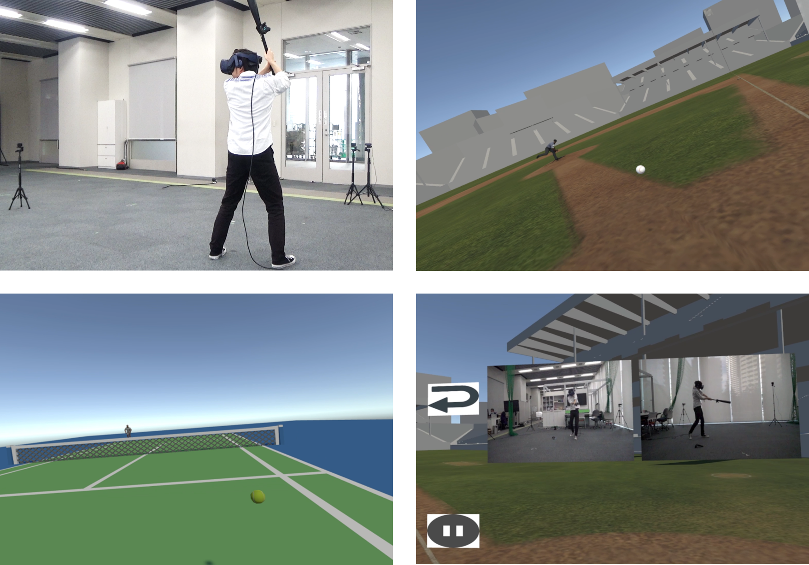

スポーツ反復練習のためのVirtual Realityを利用した高速度撮影システム
向井稜, 井尻敬
芝浦工業大学

概要.
本研究では，スポーツ練習におけるフォームの振り返りの支援を目的とし，Virtual Reality（VR）技術と高速度カメラを統合した練習システムを提案する．
提案システムにおいて，ユーザはHead Mounted Display を装着し，VRトラッカーを取り付けたバットまたはラケットを持ち，VR空間内で練習を行う．
この練習において，ユーザは投球・サーブされたボールをバット・ラケットにより打ち返す．その時，提案システムはユーザのスイングに合わせて実世界に配置した複数のカメラから高速度撮影を行い，この動画をユーザに提示する．
これにより，ユーザは練習の様子を自動的に高速度動画として記録し，自身のフォームを振り返ることが可能となる．
提案システムの有用性を評価するため，バットスイングとテニスのフォアハンドストロークを対象にユーザスタディを実施した．
結果，実験参加者より提案システムの練習利用に関して肯定的な意見が得られた．
Materials
[
preprint]
[
情報処理学会 ]
@techreport{weko_214606_1,
author = "向井,稜 and 井尻,敬",
title = "スポーツ反復練習のためのVirtual Realityを利用した高速度撮影システム",
year = "2022",
institution = "芝浦工業大学, 芝浦工業大学",
number = "28",
month = "jan"
}